16 Module 3 {m3}
DRAFT! These materials have not been officially launched yet. Materials for February 7–February 18, 2022.
16.1 Introduction
This module recaps a few topics you should have encountered in previous courses: * statistical independence and correlated data, * specifically, from your understanding of the context/collection of data, can you identify whether observations are likely to be independent?, and * maximum likelihood/maximum likelihood estimates (MLEs).
It also introduces an extension to regression, the linear mixed model
16.1.1 How deep are we going on likelihoods?
We’ll need the concept of maximum likelihood for most of the models we’ll meet in this course. That said, proofs about MLEs are not the focus of this course.
- You should have encountered the concept of likelihood in STA238: Probability, Statistics and Data Analysis II OR STA261: Probability and Statistics II.
- Having taken one of these is a pre-req for STA302, which is the pre-req for STA303.
- For more depth on this important and useful topic (mathematically and/or computationally) consider taking:
- STA355: Theory of Statistical Practice, and/or
- STA410: Statistical Computation, and/or
- STA422: Theory of Statistical Inference and/or
- STA452: Mathematical Statistics I + STA453: Mathematical Statistics II
These recommendations are based only on the calendar entries for these courses, the latest syllabi of these courses are probably your best guide to what is covered.
16.2 Learning checklist
By the end of this module, you should be able to:
- Identify situations where linear mixed models may be needed.
- Create plots to explore hierarchical data.
- Write the formula for LMMs.
- Fit LMMs with the
lmerfunction using random slopes and random intercepts, as appropriate. - Interpret the results of
lmeroutputs. - Conduct appropriate tests to compare LMMs.
16.3 Correlated data
16.3.2 Key vocabulary
- Fixed effects: These are non-random quantities. All the coefficients you were estimating in STA302 are examples of fixed effects as you were not treating \(\beta_1\) as a random variable, for example.
- Random effects: These ARE random quantities. These model parameters are treated as random variables.
- Mixed effects model: A model that includes both fixed and random effects as its parameters. These are also called hierarchical models and just mixed models. They are NOT the same as mixed methods, which is a ‘mix’ of quantitative and qualitative research methodology.
- Nested/nesting design: Observational units are grouped within grouping units. There may be multiple levels of grouping.
- Crossed effect design: Every observational unit experiences every level of the treatment variable.
- Observational units: The person or thing on which your outcome of interest is measured. In an experiment we might also call this the ‘experimental unit’ or some might say ‘statistical unit.’ In Chapter 7 of Beyond Multiple Linear Regression, these are referred to as ‘level-one observational units.’
- E.g. In a survey of our class, each student is the observational unit. When I am preparing my final grades, each assessment for each student is my unit of observation. This links back to tidy data (week 2). We want each observational unit to have its own row and only that one row.
- Grouping units: How your observational units are grouped together. In Chapter 7 of Beyond Multiple Linear Regression, these are referred to as ‘level-two observational units,’ but you could have even more levels of grouping. Groups within groups, etc.

16.4 Maximum likelihood review
\[L(\theta) = f(x | \theta) \] * Likelihood helps us understand how well our model fits our data. * Maximizing the likelihood function find estimate the coefficient values for our model that make the data we actually observed the most likely. * That might feel a little backwards, as you could say the chance of observing out data is 100%, because we did…observe it…but hopefully the idea of picking the coefficient estimates for our model that make our data the most likely makes some sense.
16.4.1 Properties of maximum likelihood estimators
For large sample sizes: * Bias goes to 0 (as sample size increases) * Approximately minimum variance * Approximately normal distribution (usually)
Another nice feature of MLEs are that they are ‘invariant’ under transformation. This means that if \(\hat\theta\) is an MLE of \(\theta\), and \(g\) is a 1-1 function, then \(g(\hat\theta)\) is an MLE of \(g(\theta)\). This will come in handy from week 7 when we want to do some transformations of our coefficients estimates with link functions.
16.4.2 Suggested reading
As this should mostly be a recap of likelihood, this is a great article on which to practice your previewing and skimming strategies.
You may want to pay special attention to the likelihood ratio test.
Chapter 2 (§ 2.1–2.9) of Roback, P. & Legler, J. Beyond Multiple Linear Regression. (2021). Retrieved from: https://bookdown.org/roback/bookdown-BeyondMLR/ (Links to an external site.)
16.5 Advice for polishing your writing
The U of T writing advice site has some great short articles with tips about common writing mistakes and tips for improving your writing. The full list from the ‘Revising’ section is below. Choose one or two that seem relevant to you and read them. If you don’t know where to start, go for the ‘Hit Parade’.
- Revising And Editing
- Hit Parade Of Errors In Grammar, Punctuation, and Style
- Using the Computer to Improve Your Writing
- Wordiness: Danger Signals and Ways to React
- Unbiased Language
- Punctuation
- Fixing Comma Splices
]
16.6 Linear mixed models (LMMs)
16.6.1 Vocal pitch case study: Part 1
16.6.1.1 Motivation
You’re interested in a language and especially want to investigate how voice pitch (perceived “highness” or “lowness” of a voice) is related to politeness for speakers of that language.
16.6.1.2 Design of the experiment
- You recruit 6 speakers of the language as subjects in your study.
- There are 3 males and 3 females.
- Each subject is asked to respond to 14 hypothetical situations.
- 7 of these situations are formal situations that usually require politeness (e.g., giving an excuse for being late to your scary boss), and
- 7 were more informal situations (e.g., explaining to a friend why you’re late).
- For each hypothetical situation you measure the subjects voice pitch as they respond. You also take note of each of your subjects’ sex, since you know that’s another important influence on voice pitch.]
.footnote[.small[Much of the content here is adapted from Winter, B. (2013). Linear models and linear mixed effects models in R with linguistic applications. arXiv:1308.5499. The language considered was Korean.]]
16.6.2 Formal vs informal example
16.6.2.1 Talking to your boss

16.6.2.2 Talking to your friend
 .small[Photos from unsplash.com]
.small[Photos from unsplash.com]
16.6.2.3 Read in the data
For convenience, I have created a new variable called condition, it is just a modification of the attitude variable, that takes the level formal if the particular measurement was under formal conditions and informal if the measurement was under informal conditions. This variable contains the same information as the attitude variable, just coded how I want it to be, so I remove the attitude variable at the end.
Additionally, the gender variable here is probably more accurately considered as a measure of sex here than gender identity, so I am creating a new variables called sex and also making it a factor.
## Rows: 84 Columns: 5## ── Column specification ────────────────────────────────────────────────────────
## Delimiter: ","
## chr (3): subject, gender, attitude
## dbl (2): scenario, frequency##
## ℹ Use `spec()` to retrieve the full column specification for this data.
## ℹ Specify the column types or set `show_col_types = FALSE` to quiet this message.16.6.2.4 Take a look at our data
glimpse(polite_data, width=85)## Rows: 84
## Columns: 5
## $ subject <chr> "F1", "F1", "F1", "F1", "F1", "F1", "F1", "F1", "F1", "F1", "F1",…
## $ scenario <dbl> 1, 1, 2, 2, 3, 3, 4, 4, 5, 5, 6, 6, 7, 7, 1, 1, 2, 2, 3, 3, 4, 4,…
## $ frequency <dbl> 213.3, 204.5, 285.1, 259.7, 203.9, 286.9, 250.8, 276.8, 231.9, 25…
## $ condition <fct> formal, informal, formal, informal, formal, informal, formal, inf…
## $ sex <fct> F, F, F, F, F, F, F, F, F, F, F, F, F, F, F, F, F, F, F, F, F, F,…head(polite_data)## # A tibble: 6 × 5
## subject scenario frequency condition sex
## <chr> <dbl> <dbl> <fct> <fct>
## 1 F1 1 213. formal F
## 2 F1 1 204. informal F
## 3 F1 2 285. formal F
## 4 F1 2 260. informal F
## 5 F1 3 204. formal F
## 6 F1 3 287. informal FWithout doing any analysis, how might this data violate our assumptions for a linear model?
16.6.3 Recall: Linear regression assumptions
- Errors are independent (observations are independent)
- Errors are identically distributed and the expected value of the errors is zero, \(E[\epsilon_i]=0\)
- Constant variance (homoscedasticity), \(var[\epsilon_i] = \sigma^2\).
- A straight-line relationship exists between the errors \(\epsilon_i\) and responses \(y_i\)
1.-3. are usually expressed as assuming the errors are i.i.d normally distributed with mean of zero and variance \(\sigma^2\), \[\epsilon_i \sim N(0, \sigma^2)\]
16.6.4 Why we can’t assume independence
Each subject has 14 measurements of their pitch (measured as the frequency of the vibration of your vocal cords) in different scenarios and different levels of politeness (formal/informal).
With this kind of data, since each subject gave multiple responses (a “repeated measures” design), we can see that this would violate the independence assumption that’s important in linear modelling: multiple responses from the same subject cannot be regarded as independent from each other.
In this scenario, every person has a slightly different voice pitch. This personal factor affects all responses from the same subject, thus responses are inter-dependent (correlated) within subjects rather than independent. I.e., if you have a generally low voice, even if you change your pitch when you are being informal versus formal, you probably still have a generally low pitch.
There also differences, on average in pitch by sex, so this is something we will also want to account for in our model, later.
So what do we do?
16.6.5 Let’s start with a picture
Female subjects have an ID starting with “F” and males subjects have an ID starting with “M.” What do you see?
polite_data %>%
ggplot(aes(x = condition,
y = frequency,
color=subject)) +
geom_boxplot() +
geom_point() +
facet_wrap(~subject, nrow = 2) +
ggtitle(label="Voice pitch by subjects and formal/informal setting") +
theme_bw() +
theme(legend.position = "none") # remove legend because we have facet names
16.6.5.1 Key themes from our plot
- Males tend to have lower voices than females.
- Within the male and the female groups, there is plenty of individual variation. Some subjects have relatively high pitch for their sex and others have relatively low values, regardless of the formal/informal version of the scenario.
- Subjects seem to generally use a higher pitch when speaking informally than they do when speaking formally.
Before we can go further with this case study, let’s establish a few things…
16.7 Linear mixed models
16.7.1 Thoughts on plots for hierarchical/correlated data generally
- Make use of faceted plots! You may have also seen these called lattice plots or trellis plots. These plots show you relationships in your data, conditioned on one or more of your other variables. Facet based on your grouping units.
- When working with ggplot you can facet by adding the
facet_wrapcommand. You can control which variables you condition on and how many rows and columns the facets are organised into. (There are lots of other great features we won’t go in to in depth here.)
E.g. plot + facet_wrap(~one_var) or
plot + facet_wrap(~one_var + two var, nrow = 3)
.Assume plot is a ggplot object.

These names come from the appearance of these plots being similar to the lattice of a garden trellis. They also show you different faces (facets) of your data.]
16.7.2 Assumptions
Linear mixed models assume that:
- There is a continuous response variable.
- We have modelled the dependency structure correctly (i.e. made correct choices about our random variables).
- Our units/subjects are independent, even through observations within each subject are taken not to to be.
- Both the random effects and within-unit residual errors follow normal distributions.
- The random effects errors and within-unit residual errors have constant variance .
While it is possible to some extent to check these assumptions through various diagnostics, a natural concern is that if one or more assumptions do not hold, our inferences may be invalid. Fortunately it turns out that linear mixed models are robust to violations of some of their assumptions.
16.7.3 Our model set up
16.7.3.1 Our STA302 linear model
\[\boldsymbol{y} = \boldsymbol{X\beta} + \boldsymbol{\epsilon}\] \[\boldsymbol{\epsilon} \sim N(0, \Lambda_\theta)\]
16.7.3.2 Linear mixed model
\[\boldsymbol{y} = \boldsymbol{X\beta} + \boldsymbol{Zb} + \epsilon\] \[\boldsymbol{b} \sim N(0, \psi_\theta),\ \ \boldsymbol{\epsilon} \sim N(0, \Lambda_\theta)\]]
- \(\boldsymbol{y}\) is vector of outcomes for subject \(i\),
- \(\boldsymbol{X}\) and \(\boldsymbol{Z}\) are model matrices for the fixed and random effects, respectively,
- the vector \(\boldsymbol{\beta}\) describes the effect of covariates on the mean/expectation of the outcome, \(b\) is the random effects for the units (assumed to be normally distributed with mean zero),
- \(\epsilon\) is the residual errors, normally distributed with a given variance and the errors within units are mutually independent. In this course we won’t deal with more complicated situations than a simple error vector that is distributed \(N(0, \sigma^2)\) .
16.7.3.3 Alternative formulations
Where you have observations \(Y_{ij}\) for repeated measures \(j\) on individuals \(i\), you may also see:
\[Y_{ij} = \boldsymbol{X_{ij}\beta} + \epsilon_{ij}\]
Where \(\epsilon_{ij} = U_i + Z_{ij}\) and \(Z_{ij} \sim N(0, \tau^2)\).
These errors are normally distributed BUT correlated.
OR
\[Y_{ij}|U_i \sim N(\mu_{ij}, \tau^2)\] \[\mu_{ij{ = \boldsymbol{X_{ij}\beta}+U_i}}\] \[ [U_1,\ldots,U_M]^T \sim MVN(\boldsymbol0, \Sigma)\]
- fixed effects: \(\boldsymbol{X_{ij}\beta}\) (what you’re used to)
- random effects: \(U_i\) for i in 1 to M (new part that makes this a linear mixed model)
16.7.4 What can correlated errors look like?
16.7.4.1 Random intercepts
This is one example of dependence. Here, if a subject is above average in one observation, they’re likely to be above average in their other observations.


16.7.4.2 Random slopes

In this case, not only would the residuals for subject 1 tend to be positive while the residuals for subject 2 would tend to be negative, the difference would get bigger as x increases. You don’t want that kind of pattern in the residuals!
16.7.4.3 Random slopes and intercepts

Subjects appear to have different slopes AND intercepts.
16.7.5 How do we tell R which situation we’re in?
We’ll be using the lmer() function from the lme4 package.
Many R packages provide a “vignette” to help you understand how to use the package and the theory behind it.
.
# This line only installs lme4 if you haven't got it installed already
if(!("lme4" %in% installed.packages())) install.packages("lme4")
install.packages("lme4")
vignette("lmer")16.7.5.1 Vignette activity
Have you ever looked at a package vignette before?
Use the vignette for this package (see the code above) to try to fill out the syntax for the following situations. You may find Table 2 on page 7 of the vignette quite helpful.

16.7.6 Additional considerations
16.7.6.1 Linear mixed models come with lots of different names

16.7.6.2 Fixed vs. random effects
Fixed effects are the things you care about and want to estimate. You likely chose the factor levels for a specific reason or measured the variable because you are interested in the relationship it has to your response variable. Random effects can be variables that were opportunistically measured whose variation needs to be accounted for but that you are not necessarily interested in (e.g. spatial block in a large experiment). The levels of the random effect are likely a random subset of all possible levels (although as a rule of thumb, there should usually be at least 5). However, if the experimental design includes nesting or non-independence of any kind, this needs to be accounted for to avoid pseudoreplication.
16.7.6.3 REML or ML
The math behind maximum likelihood (ML) and restricted maximum likelihood (REML) is beyond what I will assess you on in this course. The main difference between the two is how they estimate the variance parameters. They will estimate \(\beta\)s the same way.
REML is effectively a two-stage approach where estimates of the random effects are conditioned on the fixed effects. REML accounts for the degrees of freedom lost when estimating the fixed effects and provides us with unbiased estimates of our variance components. ML estimates of the variance components tend to be biased downward (smaller than they should be), making us more likely to pick models with simpler random effects structures than we should.
16.7.6.4 REML or ML
We prefer ML if we need to compare two nested based on their fixed effects, as we can’t do likelihood ratio tests with models fit with REML unless the fixed effects are exactly the same. We prefer REML when there is a large number of parameters or if our main goal is estimates of our model parameters (random and fixed). Which is usually our goal.
For this course, we’ll usually use REML, unless we are trying to compare nested models with the same random effects. There are often not major differences between the two methods, anyways.
16.7.6.5 Confidence intervals and tests
You can create Wald confidence intervals for fixed effects the way you’re used to from STA302. BUT for our random effects things can get a bit more awkward.
A variance must be in \([0, \infty)\), so what happens if you get an estimate for \(\hat{\sigma_b^2}\) that is \(0.02 \pm 0.04 = (-0.02, 0.06)\)? We can get into trouble if our variance components are close to the boundary of the parameter space or if a test requires us to fix them at these boundaries.
Despite these difficulties, if our interval estimates of our variance components are pretty safely away from 0, then we can conclude the associated random effect is needed in the model. If it seems that a variance component is effectively 0, than we can conclude we don’t need the associated random effect. We can also get this from likelihood ratio tests, where big or small p-values lead to clear-cut conclusions, but we face more challenges for making inferences when our p-value is close to our decision criteria.
16.8 Vocal pitch case study: Part 2
Recall:
\[Y_{ij} = \boldsymbol{X_{ij}\beta} + Z_{i}\boldsymbol{b} + \epsilon_{ij}\]
- \(Y_{ij}\) is the vocal pitch for the \(i\)th subject on the \(j\)th vocal response.
- \(X_{ij}\beta\) has an intercept and an effect for sex and condition (formal/informal)
- \(Z_ib\) represents subject \(i\)’s ‘baseline’ pitch
- \(\epsilon_{ij}\) is random noise (and potentially other unmeasured confounders)
16.8.1 Modelling individual means with random intercepts
We can consider each subject’s mean vocal pitch and in our model we will assume different random intercepts for each subject. The mixed model estimates these intercepts for us.
We are going to use the package lme4 and the function lmer() and then fit a model with only the random effect of subject (each subject gets their own intercept).
16.8.1.1 Random intercept only model
# install.packages("lme4")
library(lme4) # load the package## Loading required package: Matrix##
## Attaching package: 'Matrix'## The following objects are masked from 'package:tidyr':
##
## expand, pack, unpacksub_only = lmer(frequency ~ (1 | subject), data = polite_data)summary(sub_only)## Linear mixed model fit by REML ['lmerMod']
## Formula: frequency ~ (1 | subject)
## Data: polite_data
##
## REML criterion at convergence: 828.7
##
## Scaled residuals:
## Min 1Q Median 3Q Max
## -2.4980 -0.6071 -0.1817 0.6433 2.7520
##
## Random effects:
## Groups Name Variance Std.Dev.
## subject (Intercept) 4003 63.27
## Residual 940 30.66
## Number of obs: 84, groups: subject, 6
##
## Fixed effects:
## Estimate Std. Error t value
## (Intercept) 192.66 26.04 7.39716.8.1.2 What does this model do?
(1 | subject) is the R syntax for a random intercept. It asks that we assume there is a different intercept for each subject. The ‘1’ stands for the intercept and the term to the right of the ‘|’ should be a nominal or factor variable to be used for the random effect. You can think of this formula as telling your model that it should expect that there’s going to be multiple responses per subject, and these responses will depend on each subject’s baseline level. This effectively resolves the non-independence that stems from having multiple responses by the same subject.
16.8.1.3 Interpreting this output
From top to bottom: - The model was fit using restricted maximum likelihood (REML) - what is that? We’ll see soon. - Then we are shown our formula again. - The next part gives us the estimated variance for the random effects in the model. - Finally, we have the fixed effect portions of the model, with a separate intercept but nothing else yet because we haven’t added any fixed effects.
16.8.1.4 Adding our fixed effects
We’re interested in the effects of a formal/informal scenario and sex on the pitch of the subject’s voice, so we’ll add these as fixed effects.
.center[Question of interest: What is the influence of formal vs informal condition on voice pitch in speakers of this language, while accounting for sex and variation within subjects?]
16.8.2 Model with condition and sex
## Linear mixed model fit by REML ['lmerMod']
## Formula: frequency ~ condition + sex + (1 | subject)
## Data: polite_data
##
## REML criterion at convergence: 795.8
##
## Scaled residuals:
## Min 1Q Median 3Q Max
## -2.3629 -0.5677 -0.2082 0.4615 3.2900
##
## Random effects:
## Groups Name Variance Std.Dev.
## subject (Intercept) 599.5 24.49
## Residual 844.6 29.06
## Number of obs: 84, groups: subject, 6
##
## Fixed effects:
## Estimate Std. Error t value
## (Intercept) 237.054 15.166 15.631
## conditioninformal 19.864 6.342 3.132
## sexM -108.660 20.974 -5.181
##
## Correlation of Fixed Effects:
## (Intr) cndtnn
## condtnnfrml -0.209
## sexM -0.691 0.000You should be able to interpret the fixed effects in the way you are used to from linear models. Interpret the fixed effects coefficients below.
## (Intercept) conditioninformal sexM
## 237.05357 19.86429 -108.65952Males have lower pitches than females by an average of 109 Hz and in informal situations speakers have a higher pitch by about 20 Hz on average.
16.8.3 Aside: Summary of means

This gives us a general idea of what is going on…but doesn’t account for variability at all! Maybe these differences don’t actually mean anything in the context of the variability of our data. That is why we want to take a modelling approach.
16.8.3.1 Random slopes for condition
Previously we assumed that the effect of formal/informal conditions were the same for all subjects (one coefficient for this variable). However, the effect of the condition might be different for different subjects; that is, there might be a condition and subject interaction. For example, it might be expected that some people are more polite in formal scenarios, others less. We need a random slope model, where subjects and items are not only allowed to have differing intercepts, but where they are also allowed to have different slopes for the effect of formality on pitch.
<img src=“images/m3/subject_slopes.png,” height = 400>
Do you think the slopes are different for different subjects?
16.8.3.2 Random slopes for condition
## boundary (singular) fit: see ?isSingular## Linear mixed model fit by REML ['lmerMod']
## Formula: frequency ~ condition + sex + (1 + condition | subject)
## Data: polite_data
##
## REML criterion at convergence: 795.8
##
## Scaled residuals:
## Min 1Q Median 3Q Max
## -2.3537 -0.5822 -0.2209 0.4785 3.2847
##
## Random effects:
## Groups Name Variance Std.Dev. Corr
## subject (Intercept) 621.9309 24.939
## conditioninformal 0.8045 0.897 -1.00
## Residual 844.3846 29.058
## Number of obs: 84, groups: subject, 6
##
## Fixed effects:
## Estimate Std. Error t value
## (Intercept) 237.737 15.279 15.560
## conditioninformal 19.864 6.352 3.127
## sexM -110.027 20.946 -5.253
##
## Correlation of Fixed Effects:
## (Intr) cndtnn
## condtnnfrml -0.246
## sexM -0.685 0.000
## convergence code: 0
## boundary (singular) fit: see ?isSingular16.8.3.3 Random slopes for condition
These new condition slopes are looking pretty similar…
## $subject
## (Intercept) conditioninformal sexM
## F1 223.1947 20.38733 -110.0272
## F2 247.4326 19.51559 -110.0272
## F3 240.4958 19.76508 -110.0272
## M3 266.7502 18.82080 -110.0272
## M4 243.5792 19.65418 -110.0272
## M7 204.9719 21.04275 -110.0272
##
## attr(,"class")
## [1] "coef.mer"- Let’s compare some models.
lmtest::lrtestwill run a likelihood ratio test for us.
What is your conclusion? Do we need the random slopes?
## Likelihood ratio test
##
## Model 1: frequency ~ condition + sex + (1 | subject)
## Model 2: frequency ~ condition + sex + (1 + condition | subject)
## #Df LogLik Df Chisq Pr(>Chisq)
## 1 5 -397.9
## 2 7 -397.9 2 0.0119 0.9941Note: We can happily do a likelihood ratio test because we have the same fixed effects and are only comparing nested random effects here. See the additional considerations section for why I mention this.
Conclusion from this test: The slopes are an unnecessary complication to our model. (I.e., No evidence against the hypothesis that the simpler model explains the data just as well.)
16.8.3.4 Scenario random intercepts
Does adding random intercepts for the scenarios improve the model?

## Linear mixed model fit by REML ['lmerMod']
## Formula: frequency ~ condition + sex + (1 | subject) + (1 | scenario)
## Data: polite_data
##
## REML criterion at convergence: 784
##
## Scaled residuals:
## Min 1Q Median 3Q Max
## -2.2717 -0.6326 -0.0833 0.5260 3.5191
##
## Random effects:
## Groups Name Variance Std.Dev.
## scenario (Intercept) 222.0 14.90
## subject (Intercept) 614.4 24.79
## Residual 637.0 25.24
## Number of obs: 84, groups: scenario, 7; subject, 6
##
## Fixed effects:
## Estimate Std. Error t value
## (Intercept) 237.054 16.101 14.723
## conditioninformal 19.864 5.507 3.607
## sexM -108.660 20.974 -5.181
##
## Correlation of Fixed Effects:
## (Intr) cndtnn
## condtnnfrml -0.171
## sexM -0.651 0.000Does adding random intercepts for the scenarios improve the model?
lmtest::lrtest(w_scen, w_fixed)## Likelihood ratio test
##
## Model 1: frequency ~ condition + sex + (1 | subject) + (1 | scenario)
## Model 2: frequency ~ condition + sex + (1 | subject)
## #Df LogLik Df Chisq Pr(>Chisq)
## 1 6 -391.98
## 2 5 -397.90 -1 11.851 0.0005765 ***
## ---
## Signif. codes: 0 '***' 0.001 '**' 0.01 '*' 0.05 '.' 0.1 ' ' 1Conclusion from this test: Yes! Including a random effect for scenario does explain the data better. We have very strong evidence against the hypothesis that the simpler model fits the data just as well.
16.8.4 Scenario random slopes
Does adding random slopes for the scenarios improve the model?
## `summarise()` has grouped output by 'scenario'. You can override using the `.groups` argument.<img src=“images/m3/scenario_slopes.png,” height = 200>
## Linear mixed model fit by REML ['lmerMod']
## Formula: frequency ~ condition + sex + (1 | subject) + (1 + condition |
## scenario)
## Data: polite_data
##
## REML criterion at convergence: 783.6
##
## Scaled residuals:
## Min 1Q Median 3Q Max
## -2.1567 -0.6021 -0.1097 0.5033 3.4023
##
## Random effects:
## Groups Name Variance Std.Dev. Corr
## scenario (Intercept) 278.2 16.680
## conditioninformal 72.3 8.503 -0.51
## subject (Intercept) 615.6 24.812
## Residual 618.6 24.873
## Number of obs: 84, groups: scenario, 7; subject, 6
##
## Fixed effects:
## Estimate Std. Error t value
## (Intercept) 237.054 16.342 14.506
## conditioninformal 19.864 6.308 3.149
## sexM -108.660 20.973 -5.181
##
## Correlation of Fixed Effects:
## (Intr) cndtnn
## condtnnfrml -0.244
## sexM -0.642 0.000Does adding random slopes for the scenarios improve the model?
## Likelihood ratio test
##
## Model 1: frequency ~ condition + sex + (1 | subject) + (1 | scenario)
## Model 2: frequency ~ condition + sex + (1 | subject) + (1 + condition |
## scenario)
## #Df LogLik Df Chisq Pr(>Chisq)
## 1 6 -391.98
## 2 8 -391.79 2 0.3755 0.8288Conclusion from this test: We have no evidence against the claim that the model with the simpler random effects is as good a fit to the data as the model with the more complicated random effect structure.
16.9 Interactions between random effects and fixed effects
Recall the honey data from the Statdew Valley interactive.
Your grandmother was a bit eccentric when it came to farm management. She swore that her bees produced more honey if she played them music in the morning. In fact, she even mentioned that she thought they particularly liked K-pop.
She left you some data that she thinks proves this. While the sample size isn’t that large, you decide to take a look anyways. The data is called
honeyand records the honey produced each month for each of her 6 hives (in grams). Each hive listened to each of the song options (Dynamite by BTS, Adagio in B minor by Mozart and No music) for a month, three times. The order was randomized for each hive. It took 9 months to collect this data and the information your grandmother left you says honey production should have been fairly constant over this period and that all the hives experienced the same weather conditions, food access, etc.
## Rows: 54
## Columns: 3
## $ hive <int> 1, 1, 1, 2, 2, 2, 3, 3, 3, 4, 4, 4, 5, 5, 5, 6, 6, 6, 1, 1, 1,…
## $ song <chr> "No music", "No music", "No music", "No music", "No music", "N…
## $ honey_g <dbl> 196.56, 199.58, 200.71, 195.80, 199.58, 200.71, 226.80, 227.55…16.9.1 Model formula
I said the model formula would look like this:
\[y_{ijk} = \mu + \alpha_i + b_{j} + + (\alpha b)_{ij} + \epsilon_{ijk}\]
where \(y_{ijk}\) is the amount of honey produced (in grams) in the \(k^{th}\) month by the \(j^{th}\) hive while listening to song \(i\). Here, \(\mu\) is the grand mean of honey production, \(\alpha_i\) are the \(I\) fixed effects for song and \(b_j\) are the random effects for hive \(j\). \((\alpha b)_{ij}\) are the \(IJ\) interaction terms for the interaction between the the hive and the song. What does this represent here? Well, maybe some hives respond to a certain song quite differently to other hives. \((\alpha b)_{ij}\) is a random effect because any term involving a random effect must also be a random effect. \((\alpha b)_{ij} ~ \sim N(0, \sigma^2_{\alpha b})\), \(b_k \sim N(0, \sigma_b^2)\) and \(\epsilon_{ijk} \sim N(0, \sigma^2)\). All the random effects are mutually independent random variables.
16.9.2 How would we fit this with lmer?
This is how we would fit a model with only a hive effect:
This is how we would fit our full model, with a hive effect AND a hive and song interaction:
16.9.2.1 Do we need the interaction?
## Likelihood ratio test
##
## Model 1: honey_g ~ song + (1 | hive) + (1 | hive:song)
## Model 2: honey_g ~ song + (1 | hive)
## #Df LogLik Df Chisq Pr(>Chisq)
## 1 6 -175.66
## 2 5 -211.25 -1 71.199 < 2.2e-16 ***
## ---
## Signif. codes: 0 '***' 0.001 '**' 0.01 '*' 0.05 '.' 0.1 ' ' 1Conclusion: We get a really small p-value, so we have strong evidence against the hypothesis that the simper model, with no song/hive interaction is as good as our full model.
16.10 More fixed vs random effects practice
Consider the following two examples from Roback & Legler (2021), section 7.10. Identify which variable is the response and which are the fixed effects and the random effects.
Cockroaches! For a study of cockroach infestation, traps were set up in the kitchen, bathroom, and bedroom in a random sample of 100 New York City apartments. The goal is to estimate cockroach infestation levels given tenant income and age of the building.
Variables: room type, tenant income,apartment, building age, building, count of cockroaches
Radon in Minnesota. Radon is a carcinogen – a naturally occurring radioactive gas whose decay products are also radioactive – known to cause lung cancer in high concentrations. The EPA sampled more than 80,000 homes across the U.S. Each house came from a randomly selected county and measurements were made on each level of each home. Uranium measurements at the county level were included to improve the radon estimates.
Variables: radon measurement, home, level of home, uranium, county
16.10.1 Answers
16.10.1.1 Cockroaches
- response: count of cockroaches
- fixed effects: room type (kitchen, bathroom, bedroom), tenant income, building age
- random effects: apartment, building
16.10.1.2 Radon
- response: radon measurement
- fixed effects: level of home (e.g. upper or lower level), uranium (county level variable)
- random effects: home, county